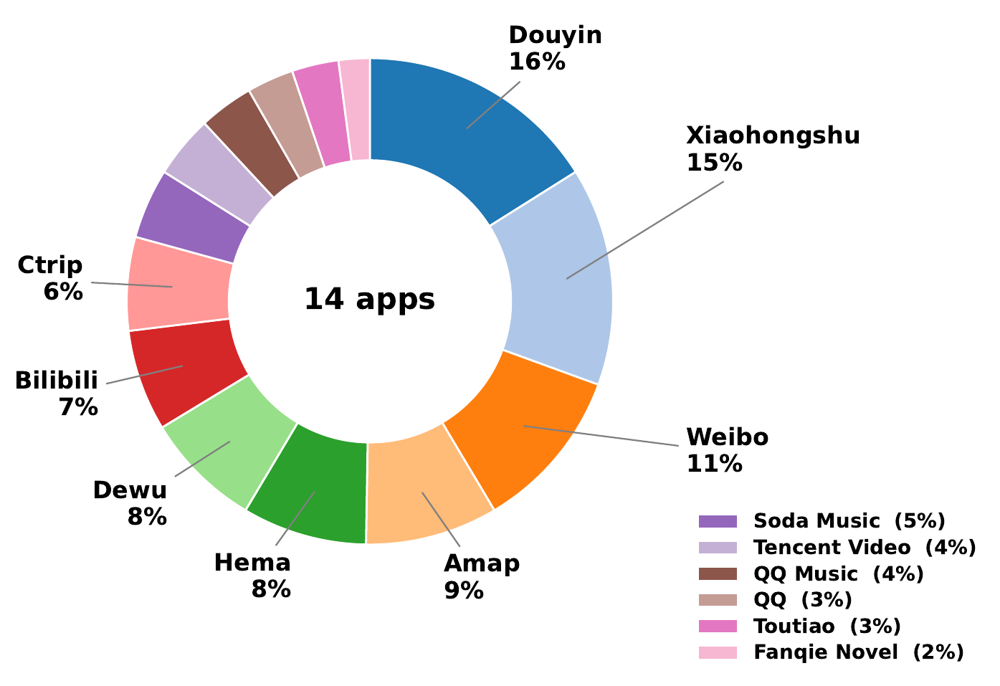
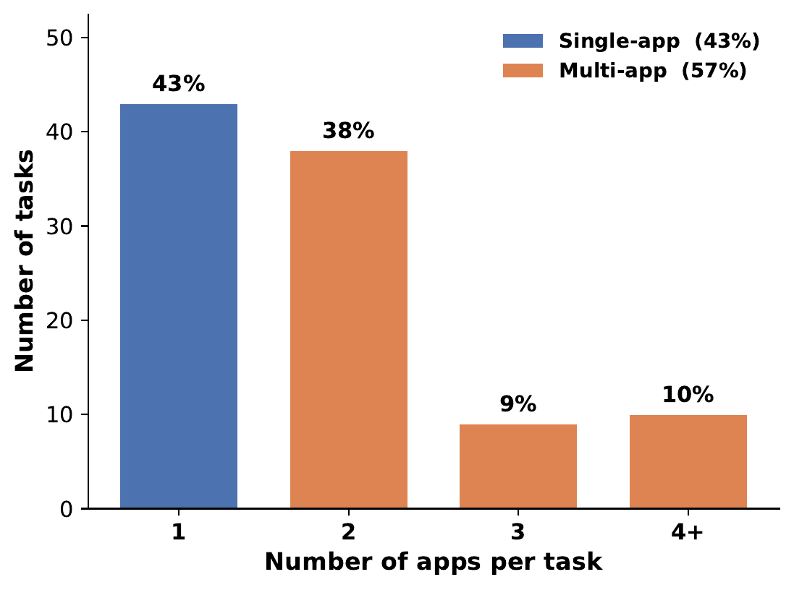

The RealMobile Benchmark
RealMobile is built from real user traffic, hand-rewritten for reproducible evaluation, and executed on physical devices against live applications. It runs entirely on real devices, scores each task through fine-grained sub-goals with partial credit, and most tasks span multiple applications.



10 tasks
Foundation
Basic GUI operations: clicking, scrolling, inputting, and navigating across interfaces.
16 tasks
Safety & Reflection
Respecting user-defined boundaries and recognizing when a task should not proceed.
33 tasks
Memory & Knowledge
Retaining information across steps and applying external knowledge to complete tasks.
41 tasks
Complex Reasoning & Planning
Long-horizon planning, multi-source aggregation, and adaptive decision-making.